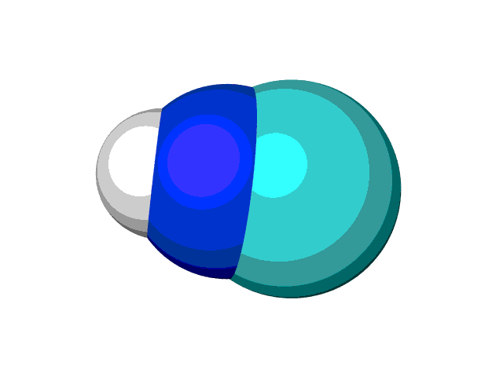

Examples¶
Here we supply some example uses of the Squid codebase. These examples can all be found and run in the git repository.
Geometry - Smoothing out a Reaction Coordinate¶
The below code shows how, given a folder of steps in a reaction coordinate, we can smooth out the full reaction.
# System imports
import os
import copy
# Squid imports
from squid import files
from squid import geometry
# First we want to read in the manually made iterations
fptrs = [int(f.split(".xyz")[0]) for f in os.listdir("reaction_coordinate")]
fptrs.sort()
# Now, we loop through all files in numerical order and append to our reaction coordinate
rxn = []
for f in fptrs:
rxn.append(files.read_xyz("reaction_coordinate/%d.xyz" % f))
# Save an example of this rough reaction we made
files.write_xyz(rxn, "reaction_coordinate_rough")
# Now, we smooth it out. There are many ways of doing so. We'll only show the main two methods here
# Here we just make a copy of the frames for the second method
held_rough_reaction = copy.deepcopy(rxn)
# Method 1 - Procrustes to minimize rotations and translations between consecutive frames
geometry.procrustes(rxn)
files.write_xyz(rxn, "reaction_coordinate_procrustes")
# Method 2 - Procrustes plus linear interpolation
# Note, R_MAX is the maximum average change in atomic positions between adjacent frames (in angstroms)
# F_MAX is the maximum number of frames we want in the final reaction coordinate
rxn = copy.deepcopy(held_rough_reaction) # Grab the previously rough reaction
geometry.smooth_xyz(rxn, R_MAX=0.1, F_MAX=50, PROCRUSTES=True, outName="reaction_coordinate_smooth", write_xyz=True)
The rough reaction coordinate initially appears smooth, but as we reach the final frame we see that there is clearly a change in reference frame. This is due to the fact that when optimizing in DFT we usually get some residual rotations due to switching between internal coordinates and cartesian coordinates.
However, when using the procrustes method we remove the rigid rotation associated with this change of coordinate system.

Finally, with the added linear interpolations we end up with a smooth reaction coordinate.

DFT - Geometry Optimization of Acetic Acid¶
The below code shows how to use Orca to optimize the geometry of an acetic acid dimer.
from squid import orca
from squid import files
# Read in the xyz file
frames = files.read_xyz("acetic_acid_dimer.xyz")
# Run a simulation locally using the Hartree Fock method (with 3 corrections)
orca.job("aa_dimer_local","! HF-3c Opt",atoms=frames,queue=None)
DFT - Molecular Orbitals Post Processing¶
The below code shows how to use g09 and vmd to generate and display molecular orbitals of a DFT simulation. Note, this uses g09’s cubegen and formchk code.
from squid import g09
from squid import files
# Run water simulation
def opt_water():
frames = files.read_xyz('water.xyz')
return g09.job('water',
'HSEH1PBE/cc-pVTZ OPT=() SCRF(Solvent=Toluene)',
atoms=frames,
queue=None,
force=True)
job = opt_water()
job.wait()
g09.cubegen_analysis("water", orbital=3)
This will optimize the geometry of a water molecule and then automatically generate a VMD session with various representations. In the console output it’ll show the following in blue:
Representations are as follows:
1 - CPK of atoms
2 - LUMO Positive
3 - HOMO Positive
4 - LUMO Negative
5 - HOMO Negative
6 - Potential Surface
7 - MO 3
Choosing only displays 1, 3, and 5 we can see the HOMO level of water as follows (positive being blue and negative being red):
Recent updates now allow this for orca as well. NOTE! By default Orca does not take into account degenerate energy states when populating. To do so, ensure the following is in your extra_section before trying the visualization:
%scf FracOcc true end
from squid import orca
from squid import structures
ROUTE_OPT = '! B97-D3 def2-TZVP OPT'
EXTRA_SECTION = ''
frames = [structures.Atom("O", -0.730404, 2.443498, 0.004930),
structures.Atom("H", 0.227213, 2.402054, -0.008942),
structures.Atom("H", -1.008399, 1.573518, -0.286267)]
j = orca.job("water", ROUTE_OPT,
atoms=frames,
extra_section=EXTRA_SECTION,
queue=None, procs=1, mem=1000)
j.wait()
orca.mo_analysis("water",
orbital=[0, 1, 2, 3],
HOMO=True,
LUMO=True,
wireframe=True)
DFT - Electrostatic Potential Mapped on Electron Density Post Processing¶
from squid import orca
from squid import structures
ROUTE_OPT = '! B97-D3 def2-TZVP OPT'
EXTRA_SECTION = ''
frames = [structures.Atom("O", -0.730404, 2.443498, 0.004930),
structures.Atom("H", 0.227213, 2.402054, -0.008942),
structures.Atom("H", -1.008399, 1.573518, -0.286267)]
j = orca.job("water", ROUTE_OPT,
atoms=frames,
extra_section=EXTRA_SECTION,
queue=None, procs=1, mem=1000)
j.wait()
orca.pot_analysis("water", wireframe=True, npoints=80)

DFT - Nudged Elastic Band of CNH Isomerization¶
The below code shows how to use the Nudged Elastic Band method (NEB) to optimize for the minimum energy pathway. Note, this is a rough example, and in reality one would make sure to optimize both endpoints of frames at the same level of theory and then to proceed with the NEB simulation.
from squid import neb
from squid import files
frames = files.read_xyz("CNH_HCN.xyz")
new_opt_params = {'step_size': 0.1,
'step_size_adjustment': 0.5,
'max_step': 0.2,
'linesearch': 'backtrack',
'accelerate': True,
'reset_step_size': 5}
optimizer = neb.NEB("neb_test",
frames,
"! HF-3c",
opt="LBFGS",
new_opt_params=new_opt_params)
optimizer.optimize()
Example output is as follows:
------------------------------------------------------------------------------------------
Run_Name = neb_test
DFT Package = orca
Spring Constant for NEB: 0.1837 Ha/Ang = 4.99928 eV/Ang
Running neb with optimization method LBFGS
step_size = 0.1
step_size_adjustment = 0.5
Linesearch method used is backtrack
Will reset stored parameters and gradients when stepped bad.
Will reset step_size after 5 good steps.
Will accelerate step_size after 5 good steps.
Will use procrustes to remove rigid rotations and translations
Convergence Criteria:
g_rms = 0.001 (Ha/Ang) = 0.0272144 (eV/Ang)
g_max = 0.001 (Ha/Ang) = 0.0272144 (eV/Ang)
maxiter = 1000
---------------------------------------------
Step RMS_F (eV/Ang) MAX_F (eV/Ang) MAX_E (kT_300) MAX Translational Force (eV/Ang) Energies (kT_300)
----
0 53.2607 95.8912 733.9 0.0000 -92.232 + 13.1 273.4 269.5 695.5 733.9 693.2 610.5 384.1 262.4 -17.0 -24.2
1 13.2722 31.0298 192.3 0.0000 -92.232 + 9.0 153.6 67.9 184.2 192.3 177.8 167.8 158.1 93.5 -19.4 -24.2
2 5.6462 9.9857 159.4 0.0000 -92.232 + 7.6 50.0 60.8 147.6 159.4 145.9 114.6 68.2 27.7 -19.4 -24.2
3 3.4829 6.7076 140.3 0.0000 -92.232 + 5.7 37.6 59.4 129.9 140.3 129.7 105.3 62.9 12.6 -20.0 -24.2
4 2.4373 5.1388 128.9 0.0000 -92.232 + 4.8 36.1 59.2 119.6 128.9 121.9 102.3 61.3 8.9 -20.6 -24.2
5 1.7959 4.0514 122.2 0.0000 -92.232 + 4.4 35.7 59.4 113.6 122.2 118.6 101.2 60.8 7.6 -20.9 -24.2
6 1.3715 3.2678 118.4 0.0000 -92.232 + 4.3 35.5 59.7 110.0 118.4 117.0 100.7 60.6 7.2 -21.1 -24.2
7 0.8475 2.0949 115.5 0.0000 -92.232 + 4.4 35.5 60.5 106.0 114.3 115.5 100.3 60.4 7.0 -21.1 -24.2
8 0.6027 1.3783 115.0 0.0000 -92.232 + 4.6 35.2 61.1 104.2 113.0 115.0 99.9 60.0 7.1 -21.0 -24.2
9 0.4495 0.9335 114.8 0.0000 -92.232 + 4.9 34.5 61.7 103.1 112.5 114.8 99.6 59.2 7.3 -20.8 -24.2
10 0.3571 0.799 114.7 0.0000 -92.232 + 5.2 34.0 62.1 102.1 112.3 114.7 99.3 58.6 7.5 -20.5 -24.2
11 0.2806 0.6794 114.7 0.0000 -92.232 + 5.5 33.7 62.4 101.3 112.4 114.7 99.0 58.0 7.8 -20.3 -24.2
12 0.2343 0.5628 114.6 0.0000 -92.232 + 5.8 33.5 62.7 100.5 112.4 114.6 98.7 57.6 8.0 -20.0 -24.2
13 0.1914 0.3947 114.6 0.0000 -92.232 + 6.3 33.0 63.2 98.9 112.7 114.6 98.0 57.0 8.4 -19.5 -24.2
14 0.1686 0.3585 114.6 0.0000 -92.232 + 6.8 32.7 63.5 97.7 112.8 114.6 97.4 56.5 9.1 -19.1 -24.2
15 0.1405 0.2894 114.6 0.0000 -92.232 + 7.3 32.5 63.6 96.6 112.9 114.6 96.8 56.1 9.9 -18.6 -24.2
16 0.1261 0.2586 114.6 0.0000 -92.232 + 7.7 32.4 63.7 95.8 112.9 114.6 96.3 55.8 10.5 -18.2 -24.2
17 0.1447 0.4157 114.6 0.0000 -92.232 + 7.9 32.4 64.0 95.0 113.0 114.6 95.8 55.5 10.8 -17.7 -24.2
18 0.1113 0.2416 114.6 0.0000 -92.232 + 7.8 32.4 63.6 95.4 112.9 114.6 96.1 55.7 10.6 -18.0 -24.2
19 0.1099 0.2155 114.5 0.0000 -92.232 + 7.9 32.4 63.5 95.1 112.9 114.5 95.9 55.5 10.8 -17.8 -24.2
20 0.1017 0.1878 114.5 0.0000 -92.232 + 8.0 32.4 63.3 94.8 112.9 114.5 95.6 55.4 11.0 -17.6 -24.2
21 0.0941 0.1725 114.4 0.0000 -92.232 + 8.1 32.4 63.1 94.5 112.8 114.4 95.4 55.3 11.1 -17.5 -24.2
22 0.0882 0.1662 114.4 0.0000 -92.232 + 8.2 32.5 62.9 94.2 112.8 114.4 95.2 55.2 11.3 -17.3 -24.2
23 0.0833 0.1592 114.3 0.0000 -92.232 + 8.3 32.5 62.8 93.9 112.8 114.3 95.0 55.1 11.4 -17.2 -24.2
24 0.0753 0.1452 114.3 0.0000 -92.232 + 8.4 32.5 62.6 93.4 112.7 114.3 94.7 54.9 11.7 -16.9 -24.2
25 0.0693 0.1317 114.2 0.0000 -92.232 + 8.6 32.5 62.4 92.9 112.6 114.2 94.3 54.7 12.0 -16.6 -24.2
26 0.0641 0.1202 114.1 0.0000 -92.232 + 8.7 32.5 62.2 92.5 112.6 114.1 94.0 54.5 12.2 -16.4 -24.2
27 0.0593 0.1102 114.1 0.0000 -92.232 + 8.8 32.5 62.0 92.1 112.5 114.1 93.7 54.4 12.4 -16.2 -24.2
28 0.055 0.1016 114.0 0.0000 -92.232 + 8.9 32.6 61.8 91.7 112.4 114.0 93.4 54.2 12.6 -16.0 -24.2
29 0.051 0.094 114.0 0.0000 -92.232 + 9.0 32.6 61.6 91.3 112.4 114.0 93.1 54.1 12.8 -15.8 -24.2
30 0.044 0.0809 113.9 0.0000 -92.232 + 9.2 32.6 61.3 90.7 112.2 113.9 92.6 53.9 13.2 -15.4 -24.2
31 0.0382 0.0711 113.8 0.0000 -92.232 + 9.3 32.6 60.9 90.2 112.1 113.8 92.2 53.7 13.5 -15.1 -24.2
32 0.0334 0.0633 113.8 0.0000 -92.232 + 9.4 32.6 60.6 89.7 112.0 113.8 91.9 53.5 13.7 -14.9 -24.2
33 0.0298 0.0565 113.7 0.0000 -92.232 + 9.5 32.7 60.3 89.2 111.9 113.7 91.6 53.4 13.9 -14.7 -24.2
34 0.0271 0.0509 113.7 0.0000 -92.232 + 9.5 32.8 60.0 88.8 111.8 113.7 91.3 53.2 14.1 -14.5 -24.2
NEB converged the RMS force.
------------------------------------------------------------------------------------------
With the following graph made using:
scanDFT neb_test-^-%d 1 10 -neb neb_test-0-0,neb_test-0-11 -c ^,0,34 -t "NEB of CNH Isomerization" -lx "Reaction Coordinate" -ly "Energy (kT_300)" -u kT_300

MD - Equilibration of Solvent Box¶
Below is a method of using squid to (1) read in a solvent molecule, (2) utilize the packmol hook to pack a box, and (3) equilibrate the system via NPT and NVT calculations.
from squid import units
from squid import structures
from squid import lammps_job
# Generate the system object to hold our solvent
solvent_box = structures.System(name="solv_box", box_size=(15.0, 15.0, 15.0), box_angles=(90.0, 90.0, 90.0), periodic=True)
# Read in our molecule
# Note, we specified our forcefield indices in the cml file
acetone = structures.Molecule("acetone.cml")
# Using packmol, pack this box with acetic acids
solvent_box.packmol([acetone], density=0.791, seed=21321)
# Now we can run an NPT simulation using lammps
## Get a list of elements for dump_modify. By default we organize types by heaviest to lightest, so do so here.
atom_types = []
elems = []
for molec in solvent_box.molecules:
for atom in molec.atoms:
if atom.type.element_name not in atom_types:
atom_types.append(atom.type.element_name)
elems.append(atom.element)
elem_mass = [units.elem_weight(e) for e in elems]
elem_str = " ".join([x for (y,x) in sorted(zip(elem_mass,elems))][::-1])
input_script = """units real
atom_style full
pair_style lj/cut/coul/cut 10.0
bond_style harmonic
angle_style harmonic
dihedral_style opls
boundary p p p
read_data solv_box.data
dump 1 all xyz 100 solv_box.xyz
dump_modify 1 element """+elem_str+"""
thermo_style custom ke pe temp press
thermo 100
minimize 1.0e-4 1.0e-6 1000 10000
velocity all create 300.0 23123 rot yes dist gaussian
timestep 1.0
fix motion_npt all npt temp 300.0 300.0 100.0 iso 0.0 0.0 1000.0
run 10000
unfix motion_npt
fix motion_nvt all nvt temp 300.0 300.0 300.0
run 10000
unfix motion_nvt
"""
lammps_job.job("solv_box", input_script, solvent_box, queue=None, hybrid_angle=False)
Plotting the pressure and temperature we can verify equilibration (note, this is a rough demo so there is still a lot of noise).


Optimizers¶
Using the built in optimizers, you’re able to extend them to mathematical problems. Take, for example, the following equation:


Using the following, you are able to determine the value of x that would minimize y. Note,
currently quick_min() does not work in this regard.
import numpy as np
from squid.optimizers.bfgs import bfgs
# from lbfgs import lbfgs
# from steepest_descent import steepest_descent
# from fire import fire
def grad(params):
# Function is y = 2x^2 + x^5 - ln(x)
# Derivative is y = 4x + 5x^4 - 1/x
x = params[0]
return np.array([float(4 * x + 5 * x**4 - 1 / x)])
def grad2(params2):
# Function is z = (x-3)^2 + (y+2)^2 + x*y
# Derivative is:
# dz/dx = 2(x-3) + y
# dz/dy = 2(y+2) + x
x, y = params2
a = 2.0 * (x - 3.0) + y
b = 2.0 * (y + 2.0) + x
return np.array([a, b])
params = [3.0]
params2 = [4.0, 4.0]
print bfgs(params, grad, new_opt_params={'dimensions': 1})
# print lbfgs(params, grad, new_opt_params={'dimensions': 1})
# print steepest_descent(params, grad, new_opt_params={'dimensions': 1})
# print fire(params, grad)
print bfgs(params2, grad2, new_opt_params={'dimensions': 2})
Due to the implementation of the optimizers, you must specify the dimensionality of your problem. A second example has been included in the above code for a two dimensional problem.